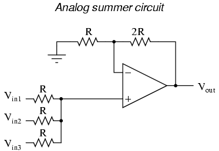

Solución de Problemas
- Intercambiar componentes idénticos
- Retirar componentes en paralelo
- Dividir el sistema en secciones y probarlas
- Simplificar y reconstruir
- Capturar una señal
- Error del operador
- Conexiones de cable defectuosas
- Problemas en fuentes de alimentación
- Componentes activos
- Componentes pasivos
- Problemas de cableado
- Problemas en fuentes de alimentación
- Componentes defectuosos
- Configuración incorrecta del sistema
- Error de diseño
Quizás la habilidad más valiosa pero difícil de aprender que podría tener cualquier técnico es la capacidad de solucionar problemas de un sistema. Para aquellos que no estén familiarizados con el término,solución de problemasSignifica el acto de identificar y corregir problemas en cualquier tipo de sistema. Para un mecánico de automóviles, esto significa determinar y solucionar problemas en los automóviles en función del comportamiento del automóvil. Para un médico, esto significa diagnosticar correctamente la enfermedad de un paciente y prescribir una cura. Para un experto en negocios, esto significa identificar la(s) fuente(s) de ineficiencia en una corporación y recomendar medidas correctivas.
Los solucionadores de problemas deben poder determinar la causa o causas de un problema simplemente examinando sus efectos. Rara vez la fuente de un problema se presenta directamente a la vista de todos. Las relaciones causa/efecto suelen ser complejas, incluso para sistemas aparentemente simples, y a menudo el solucionador de problemas competente es considerado por los demás como una especie de hacedor de milagros por su capacidad para discernir rápidamente la causa raíz de un problema. Si bien algunas personas tienen un talento natural para solucionar problemas, es una habilidad que se puede aprender como cualquier otra.
A veces el sistema a analizar se encuentra en tan mal estado que no hay esperanzas de volver a ponerlo en funcionamiento. Cuando los investigadores examinan los restos de un avión estrellado, o cuando un médico realiza una autopsia, deben hacer todo lo posible para determinar la causa del fallo masivo después del hecho. Afortunadamente, la tarea del solucionador de problemas no suele ser tan desalentadora. Por lo general, un sistema que se comporta mal todavía funciona hasta cierto punto y el solucionador de problemas puede estimularlo y ajustarlo como parte del procedimiento de diagnóstico. En este sentido, la resolución de problemas se parece mucho al método científico: determinar relaciones causa/efecto mediante experimentación en vivo.
Al igual que la ciencia, la resolución de problemas es una mezcla de procedimiento estándar y creatividad personal. Hay ciertos procedimientos empleados como herramientas para discernir causas y efectos, pero son impotentes si no se combinan con una mente creativa e inquisitiva. En el curso de la resolución de problemas, es posible que el solucionador de problemas tenga que inventar su propia técnica específica, adaptada al sistema particular en el que está trabajando, y/o modificar herramientas para realizar una tarea especial. La creatividad es necesaria al examinar un problema desde diferentes perspectivas: aprender a hacer diferentes preguntas cuando las preguntas "estándar" no conducen a respuestas fructíferas.
Si hay un rasgo de personalidad que he visto asociado positivamente con una excelente resolución de problemas más que cualquier otro, es la curiosidad técnica. Las personas fascinadas por aprender cómo funcionan las cosas y que no se desaniman ante un problema desafiante, tienden a ser mejores que otras para solucionar problemas. Richard Feynman, el fallecido físico que enseñó en Caltech durante muchos años, me ilustra la personalidad suprema en resolución de problemas. Leer cualquiera de sus libros (auto)biográficos es a la vez educativo y entretenido, y los recomiendo a cualquiera que busque desarrollar sus propias habilidades de razonamiento científico y resolución de problemas.
Questions to ask before proceeding
- ¿Ha funcionado el sistema alguna vez antes? En caso afirmativo, ¿ha sucedido algo desde entonces que pueda causar el problema?
- ¿Este sistema ha demostrado ser propenso a ciertos tipos de fallas?
- ¿Qué tan urgente es la necesidad de reparación?
- ¿Cuáles son lospreocupaciones de seguridad, antes de comenzar a solucionar problemas?
- ¿Cuáles son las preocupaciones sobre la calidad del proceso antes de comenzar a solucionar problemas (qué puedo hacer sin causar interrupciones en la producción)?
Estas cuestiones preliminares no son triviales. De hecho, son esenciales para una resolución de problemas rápida y segura. Son especialmente importantes cuando el sistema a solucionar es grande, peligroso y/o costoso.
A veces, el solucionador de problemas deberá trabajar en un sistema que todavía está en pleno funcionamiento (quizás el mejor ejemplo de esto sea un médico que diagnostica a un paciente vivo). Una vez que la causa o causas se determinan con un alto grado de certeza, existe el paso de la acción correctiva. Corregir una falla del sistema sin interrumpir significativamente su funcionamiento puede ser un gran desafío y merece una planificación exhaustiva.
Cuando existe un alto riesgo al tomar medidas correctivas, como es el caso de realizar una cirugía a un paciente o reparar un proceso operativo en una planta química, es esencial que los trabajadores planifiquen con anticipación para posibles problemas. Una pregunta que debe hacerse antes de continuar con las reparaciones es: "¿Cómo y en qué momento puedo cancelar las reparaciones si algo sale mal?" En situaciones de riesgo, es vital tener planificadas "rutas de escape" en su acción correctiva, en caso de que las cosas no salgan según lo planeado. Un cirujano que opera a un paciente sabe si hay "puntos sin retorno" en dicho procedimiento y se detiene para volver a examinar al paciente antes de pasar esos puntos. Él o ella también sabe cómo "retirarse" de un procedimiento quirúrgico en esos puntos si es necesario.
General troubleshooting tips
Cuando se acerca por primera vez a un sistema que falla o se comporta mal, el nuevo solucionador de problemas a menudo no sabe por dónde empezar. Las siguientes estrategias no son exhaustivas de ninguna manera, pero brindan al solucionador de problemas una lista de verificación simple de preguntas que debe hacer para comenzar a aislar el problema.
Como consejos, estas sugerencias para la solución de problemas no son procedimientos completos: sirven sólo como puntos de partida para el proceso de solución de problemas. Una parte esencial de la solución de problemas oportuna es la evaluación de la probabilidad, y estos consejos ayudan al solucionador de problemas a determinar qué posibles puntos de falla son más o menos probables que otros. El aislamiento final de la falla del sistema generalmente se determina mediante técnicas más específicas (descritas en la siguiente sección:Técnicas específicas de resolución de problemas).
Prior occurrence
Si históricamente se sabe que este dispositivo o proceso falla de una manera particular y las condiciones que conducen a esta falla común no han cambiado, verifique primero esta "forma". Un corolario de este consejo para la resolución de problemas es la directiva de mantener registros detallados de las fallas. Idealmente, lo óptimo es un registro de fallas basado en computadora, de modo que se pueda hacer referencia a las fallas y correlacionarlas con una serie de factores como la hora, la fecha y las condiciones ambientales.
Ejemplo: El motor del coche se está sobrecalentando. Las dos últimas veces que esto sucedió, la causa fue un nivel bajo de refrigerante en el radiador.
Qué hacer:Primero verifique el nivel del refrigerante. Por supuesto, la historia pasada de ninguna manera garantiza que los síntomas actuales sean causados por el mismo problema, pero como esto es más probable, tiene sentido verificarlo primero.
Sin embargo, si se ha corregido la causa de la falla rutinaria en un sistema (es decir, se ha reparado la fuga que causó el bajo nivel de refrigerante en el pasado), entonces esta vez puede no ser una causa probable de problema.
Recent alterations
Si un sistema ha tenido problemas inmediatamente después de algún tipo de mantenimiento u otro cambio, los problemas pueden estar relacionados con esos cambios.
Ejemplo: El mecánico recientemente ajustó el motor de mi auto y ahora escucho un ruido que no había escuchado antes de llevar el auto a reparar.
Qué hacer:Compruebe si hay algo que el mecánico haya dejado suelto después de su trabajo de puesta a punto.
Function vs. non-function
Si un sistema no produce el resultado final deseado, busque lo queishacerlo correctamente; en otras palabras, identificar dónde está el problemanoty centre sus esfuerzos en otra parte. Cualquier componente o subsistema necesario para que funcionen las piezas que funcionan correctamente probablemente esté bien. El grado de culpa a menudo puede indicar qué parte es la culpable.
Ejemplo: La radio funciona bien en la banda AM, pero no en la banda FM.
Qué hacer:Elimina de la lista de posibles causas, cualquier cosa en la radio necesaria para el funcionamiento de la banda AM. Cualquiera que sea el origen del problema, es específico de la banda FM y no de la banda AM. Esto elimina el amplificador de audio, los parlantes, los fusibles, la fuente de alimentación y casi todo el cableado externo. Poder eliminar secciones del sistema como posibles fallas reduce el alcance del problema y hace que el resto del procedimiento de resolución de problemas sea más eficiente.
Hypothesize
Según su conocimiento de cómo funciona un sistema, piense en varios tipos de fallas que podrían causar este problema (o estos fenómenos) y verifique esas fallas (comenzando con las más probables según las circunstancias, el historial o el conocimiento de las debilidades de los componentes).
Ejemplo: El motor del coche se está sobrecalentando.
Qué hacer:Considere las posibles causas del sobrecalentamiento, según lo que sabe sobre el funcionamiento del motor. O el motor genera demasiado calor o no lo elimina lo suficientemente bien (probablemente esto último). Piense en algunas posibles causas: una correa del ventilador floja, un radiador obstruido, una bomba de agua defectuosa, un nivel bajo de refrigerante, etc. Investigue cada una de esas posibilidades antes de investigar alternativas.
Técnicas específicas de diagnóstico de averías
Después de aplicar algunos de los consejos generales de solución de problemas para limitar el alcance de la ubicación de un problema, existen técnicas útiles para aislarlo aún más. Aquí hay algunos:
Intercambiar componentes idénticos
En un sistema con subsistemas idénticos o paralelos, intercambie componentes entre esos subsistemas y vea si el problema se mueve o no con el componente intercambiado. Si es así, acaba de cambiar el componente defectuoso; Si no es así, ¡sigue buscando!
Este es un poderoso método de resolución de problemas, porque le brinda una indicación tanto positiva como negativa de la falla del componente intercambiado: cuando la pieza defectuosa se intercambia entre sistemas idénticos, el subsistema anteriormente averiado comenzará a funcionar nuevamente y el subsistema que antes estaba en buen estado fallará.
Una vez pude solucionar un problema difícil de alcanzar con el sistema de encendido de un motor de automóvil usando este método: tenía un amigo con un automóvil que compartía exactamente el mismo modelo de sistema de encendido. Intercambiamos piezas entre los motores (distribuidor, cables de bujías, bobina de encendido, uno a la vez) hasta que el problema se trasladó al otro vehículo. El problema resultó ser una bobina de encendido "débil" y sólo se manifestó bajo carga pesada (una condición que no se pudo simular en mi garaje). Normalmente, este tipo de problema sólo podría identificarse utilizando un analizador de sistemas de encendido (u osciloscopio).andun dinamómetro para simular condiciones de conducción con carga. Esta técnica, sin embargo, confirmó el origen del problema con un 100% de precisión, sin utilizar ningún equipo de diagnóstico.
Ocasionalmente, puedes cambiar un componente y descubrir que el problema aún existe, pero ha cambiado de alguna manera. Esto le indica que los componentes que acaba de intercambiar sonde alguna manera diferente(calibración diferente, función diferente), y nada más. Sin embargo, no descarte esta información sólo porque no lo lleva directamente al problema: busque otros cambios en el sistema en su conjunto como resultado del intercambio e intente descubrir qué le dicen estos cambios sobre el origen del problema.
Una advertencia importante a esta técnica es la posibilidad de causar más daños. Supongamos que un componente ha fallado debido a otro fallo menos notorio en el sistema. Cambiar el componente defectuoso por un componente en buen estado hará que el componente en buen estado también falle. Por ejemplo, supongamos que un circuito desarrolla un cortocircuito que "quema" el fusible protector de ese circuito. El fusible quemado no es evidente mediante inspección y no tiene un medidor para probar eléctricamente el fusible, por lo que decide cambiar el fusible sospechoso por uno de la misma clasificación de un circuito que funcione. Como resultado de esto, el fusible en buen estado que mueves al circuito en cortocircuito también se funde, dejándote con dos fusibles fundidos y dos circuitos que no funcionan. Al menos sabes con certeza que el fusible originalwasquemado, porque el circuito al que se trasladó dejó de funcionar después del cambio, pero este conocimiento se obtuvo sólo mediante la pérdida de un fusible en buen estado y el "tiempo de inactividad" adicional del segundo circuito.
Otro ejemplo para ilustrar esta advertencia es el problema del sistema de encendido mencionado anteriormente. Supongamos que la bobina de encendido "débil" hubiera provocado que el motor se disparara, dañando el silenciador. Si el intercambio de componentes del sistema de encendido con otro vehículo hace que el problema se traslade al otro vehículo, también se pueden dañar el silenciador del otro vehículo. Como regla general, la técnica de intercambiar componentes idénticos debe utilizarse sólo cuando exista una mínima posibilidad de causar daños adicionales. Es una técnica excelente para aislar problemas no destructivos.
Ejemplo 1: Estás trabajando en una máquina herramienta CNC con unidades de eje X, Y y Z. El eje Y no funciona, pero los ejes X y Z sí funcionan. Los tres ejes comparten componentes idénticos (codificadores de retroalimentación, servomotores, servomotores).
Qué hacer:Intercambie estos componentes idénticos, uno a la vez, el eje Y y cualquiera de los ejes de trabajo (X o Z), y vea después de cada intercambio si el problema se ha movido con el intercambio.
Ejemplo 2: Un sistema estéreo no produce sonido en el altavoz izquierdo, pero el altavoz derecho funciona bien.
Qué hacer:Intente intercambiar los componentes respectivos entre los dos canales y vea si el problema cambia de lado, de izquierda a derecha. Cuando lo haga, habrá encontrado el componente defectuoso. Por ejemplo, puede cambiar los altavoces entre canales: si el problema se traslada al otro lado (es decir, el mismo altavoz que antes estaba muerto sigue muerto, ahora que está conectado al cable del canal correcto), entonces sabrá que el altavoz está defectuoso. Si el problema continúa en el mismo lado (es decir, el altavoz que antes estaba en silencio ahora produce sonido después de haber sido movido al otro lado de la habitación y conectado al otro cable), entonces sabrá que los altavoces están bien y que el problema debe estar en otra parte (quizás en el cable que conecta el altavoz silencioso al amplificador, o en el amplificador mismo).
Si se ha verificado que los altavoces están en buen estado, puede verificar los cables utilizando el mismo método. Intercambia los cables para que cada uno se conecte ahora al otro canal del amplificador y al otro altavoz. Nuevamente, si el problema cambia de lado (es decir, ahora el altavoz derecho está "muerto" y el altavoz izquierdo ahora produce sonido), entonces el cable ahora conectado al altavoz derecho debe estar defectuoso. Si ninguno de los cambios (los parlantes ni los cables) causa que el problema cambie de lado de izquierda a derecha, entonces el problema debe estar dentro del amplificador (es decir, la salida del canal izquierdo debe estar "muerta").
Retirar componentes en paralelo
Si un sistema se compone de varios componentes paralelos o redundantes que se pueden eliminar sin dañar todo el sistema, comience a eliminar estos componentes (uno a la vez) y vea si todo comienza a funcionar nuevamente.
Ejemplo 1: Ha fallado una red de comunicaciones con topología de "estrella" entre varios ordenadores. Ninguna de las computadoras puede comunicarse entre sí.
Qué hacer:Intente desconectar las computadoras, una a la vez, de la red y vea si la red comienza a funcionar nuevamente después de desconectar una de ellas. Si es así, entonces la última computadora desconectada puede ser la que tenga la culpa (puede haber estado "interfiriendo" la red al emitir datos o ruido constantemente).
Ejemplo 2: Un fusible doméstico sigue quemándose (o el disyuntor sigue abriéndose) después de un corto período de tiempo.
Qué hacer:Desenchufe los electrodomésticos de ese circuito hasta que el fusible o disyuntor deje de interrumpir el circuito. Si puede eliminar el problema desenchufando un solo aparato, entonces ese aparato podría estar defectuoso. Si descubre que desenchufar casi cualquier electrodoméstico resuelve el problema, entonces es posible que el circuito simplemente esté sobrecargado por demasiados electrodomésticos y ninguno de ellos defectuoso.
Dividir el sistema en secciones y probarlas
En un sistema con múltiples secciones o etapas, mida cuidadosamente las variables que entran y salen de cada etapa hasta que encuentre una etapa en la que las cosas no se vean bien.
Ejemplo 1: Una radio no funciona (no produce sonido en el altavoz))
Qué hacer:Divida el circuito en etapas: etapa de sintonización, etapas de mezcla, etapa de amplificador, hasta llegar a los altavoces. Mida las señales en los puntos de prueba entre estas etapas y determine si una etapa está funcionando correctamente o no.
Ejemplo 2: Un circuito de verano analógico no funciona correctamente.

Qué hacer:Probaría la red promedio pasiva (las tres resistencias en la esquina inferior izquierda del esquema) para ver que se observara el voltaje adecuado (promediado) en la entrada no inversora del amplificador operacional. Luego mediría el voltaje en la entrada inversora para ver si era el mismo que en la entrada no inversora (o, alternativamente, mediría la diferencia de voltaje entre las dos entradas del amplificador operacional, ya que debería ser cero). Continúe probando secciones del circuito (o simplemente probando puntos dentro del circuito) para ver si mide los voltajes y corrientes esperados.
Simplificar y reconstruir
Estrechamente relacionada con la estrategia de dividir un sistema en secciones, esta es en realidad una técnica de diseño y fabricación útil para nuevos circuitos, máquinas o sistemas. Siempre es más fácil comenzar el proceso de diseño y construcción en pequeños pasos, lo que lleva a pasos cada vez más grandes, en lugar de construir todo de una vez e intentar solucionarlo en su totalidad.
Supongamos que alguien estuviera construyendo un automóvil personalizado. Sería una tontería atornillar todas las piezas sin comprobar y probar los componentes y subsistemas a medida que avanzan, esperando que todo funcione perfectamente una vez ensamblado. Lo ideal sería que el constructor comprobara el correcto funcionamiento de los componentes durante el proceso de construcción: arrancar y afinar el motor.antesEstá conectado al tren motriz, verifique si hay problemas de cableado.antestodos los paneles de cubierta están colocados, verifique el sistema de frenos en el camino de entradaantessacarlo de viaje, etc.
Innumerables veces he visto a estudiantes construir un circuito experimental complejo y tener problemas para hacerlo funcionar porque no se detuvieron a verificar cosas en el camino: probar todas las resistencias.antesAl conectarlos en su lugar, asegúrese de que la fuente de alimentación esté regulando el voltaje adecuadamente.antesintentar alimentar algo con él, etc. Es parte de la naturaleza humana apresurarse a completar un proyecto, pensando que tales controles son una pérdida de tiempo valioso. Sin embargo, se perderá más tiempo solucionando un circuito defectuoso que comprobando el funcionamiento de los subsistemas durante todo el proceso de construcción.
Tomemos como ejemplo el circuito de verano analógico de la sección anterior: ¿qué pasaría si no funcionara correctamente? ¿Cómo lo simplificarías y lo probarías por etapas? Bueno, podría volver a conectar el amplificador operacional como comparador básico y ver si responde a voltajes de entrada diferenciales, y/o conectarlo como seguidor de voltaje (búfer) y ver si genera el mismo voltaje analógico que el de entrada. Si no realiza estas sencillas funciones, ¡nunca realizará su función en el circuito de verano! Al eliminar la complejidad del circuito de verano, reduciéndolo a un amplificador operacional (casi) desnudo, puede probar la funcionalidad de ese componente y luego construir desde allí (agregue retroalimentación de resistencia y verifique la amplificación de voltaje, luego agregue resistencias de entrada y verifique la suma de voltaje), verificando los resultados esperados a lo largo del camino.
Capturar una señal
Configure la instrumentación (como un registrador de datos, un registrador gráfico o un multímetro en modo "grabar") para monitorear una señal durante un período de tiempo. Esto es especialmente útil cuando se rastrean problemas intermitentes, que tienen una forma de aparecer en el momento en que les das la espalda y te alejas.
Esto puede ser esencial para demostrar qué sucede primero en un sistema de acción rápida. Muchos sistemas rápidos (especialmente los sistemas de "disparo" de apagado) tienen una capacidad de monitoreo de "primero en salir" para proporcionar este tipo de datos.
Ejemplo #1: Un sistema de control de turbina se apaga automáticamente en respuesta a una condición anormal. Sin embargo, cuando un técnico llega al lugar para inspeccionar el estado de la turbina, todo está "inactivo" y es imposible saber qué señal o condición fue responsable del apagado inicial, ya que todos los parámetros operativos ahora son "anormales".
Qué hacer:Un técnico que conocía usó una cámara de video para grabar el panel de control de la turbina, de modo que pudiera ver lo que sucedía (según las indicaciones de los medidores) primero en un evento de apagado automático. Simplemente mirando el panel después del hecho, no había forma de saberlo.cualLa señal apagó la turbina, pero la reproducción de la cinta de video mostraría lo que sucedió en secuencia, hasta una resolución de tiempo cuadro por cuadro.
Ejemplo #2: Un sistema de alarma se activa erróneamente y usted sospecha que puede deberse a que una conexión de cable específica está fallando. Desafortunadamente, ¡el problema nunca se manifiesta mientras lo miras!
Qué hacer:Muchos multímetros digitales modernos están equipados con configuraciones de "registro", mediante las cuales pueden monitorear un voltaje, corriente o resistencia a lo largo del tiempo y observar si esa medición se desvía sustancialmente de un valor regular. Esta es una herramienta invaluable para usar en fallas "intermitentes" del sistema electrónico.
Fallos probables en sistemas probados
Los siguientes problemas están ordenados de más probable a menos probable y de arriba a abajo. Este orden se ha determinado en gran medida a partir de la experiencia personal en la resolución de problemas eléctricos y electrónicos en aplicaciones automotrices, industriales y domésticas. Esta orden también supone un circuito o sistema que ha demostrado funcionar según lo diseñado y ha fallado después de un tiempo de funcionamiento sustancial. Los problemas experimentados en circuitos y sistemas recién ensamblados no necesariamente presentan las mismas probabilidades de ocurrencia.
Error del operador
Una causa frecuente de falla del sistema es el error por parte de los seres humanos que lo operan. Esta causa de problema se ubica en la parte superior de la lista, pero, por supuesto, la probabilidad real depende en gran medida de las personas responsables de la operación. Cuando el error del operador es la causa de una falla, esimprobableque será admitido antes de la investigación. No quiero decir que los operadores sean incompetentes e irresponsables; todo lo contrario: estas personas suelen ser los mejores maestros para aprender el funcionamiento del sistema y obtener un historial de fallas, pero no se puede pasar por alto la realidad del error humano. Una actitud positiva junto con buenas habilidades interpersonales por parte del solucionador de problemas contribuye en gran medida a la resolución de problemas cuando el error humano es la causa fundamental del fallo.
Bad wire connections
Por increíble que esto pueda parecerle al nuevo estudiante de electrónica, un alto porcentaje de los problemas de los sistemas eléctricos y electrónicos son causados por una fuente de problema muy simple: conexiones de cables deficientes (es decir, abiertas o en cortocircuito). Esto es especialmente cierto cuando el entorno es hostil, incluidos factores como altas vibraciones y/o una atmósfera corrosiva. Los puntos de conexión que se encuentran en cualquier variedad de conectores macho y hembra, regletas de terminales o empalmes corren el mayor riesgo de fallar. La categoría de "conexiones" también incluye contactos de interruptor mecánico, que pueden considerarse como un conector de ciclo alto. Terminales de terminación de cables inadecuados (como un conector de compresión engarzado en el extremo de unsólidoalambre - un definitivopaso en falso) puede causar conexiones de alta resistencia después de un período de servicio sin problemas.
Cabe señalar que las conexiones en sistemas de bajo voltaje tienden a ser mucho más problemáticas que las conexiones en sistemas de alto voltaje. La razón principal de esto es que el efecto del arco a través de una discontinuidad (interrupción del circuito) en sistemas de alto voltaje tiende a destruir las capas aislantes de suciedad y corrosión, e incluso puede soldar los dos extremos si se mantiene durante el tiempo suficiente. Los sistemas de bajo voltaje tienden a no generar un arco tan fuerte a través del espacio de un interruptor de circuito y también tienden a ser más sensibles a la resistencia adicional en el circuito. Los contactos de interruptor mecánico utilizados en sistemas de bajo voltaje se benefician de tener el mínimo recomendado.corriente de humectaciónconducido a través de ellos para promover una cantidad saludable de arco al abrir, incluso si este nivel de corriente no es necesario para el funcionamiento de otros componentes del circuito.
A pesar deabiertoLas fallas tienden a ser más comunes queen cortoEn el caso de fallos, los "cortocircuitos" siguen constituyendo un porcentaje sustancial de los modos de fallo del cableado. Muchos cortocircuitos son causados por la degradación del aislamiento del cable. Esto, nuevamente, es especialmente cierto cuando el ambiente es hostil, incluidos factores como alta vibración, alto calor, alta humedad o alto voltaje. Es raro encontrar un contacto de interruptor mecánico que falle en cortocircuito, excepto en el caso de contactos de alta corriente donde puede ocurrir "soldadura" de contacto en condiciones de sobrecorriente. Los cortocircuitos también pueden deberse a una acumulación de conductores en las secciones de la regleta de terminales o en la parte posterior de las placas de circuito impreso.
Un caso común de cableado en cortocircuito es elfalla a tierra, donde un conductor accidentalmente hace contacto con tierra o con la tierra del chasis. Esto puede cambiar los voltajes presentes entre otros conductores en el circuito y tierra, causando así fallas extrañas en el sistema y/o riesgos para el personal.
Problemas en fuentes de alimentación
Estos generalmente consisten en dispositivos de protección contra sobrecorriente disparados o daños por sobrecalentamiento. Aunque los circuitos de suministro de energía suelen ser menos complejos que los circuitos que se alimentan y, por lo tanto, deberían ser menos propensos a fallar solo por eso, generalmente manejan más energía que cualquier otra parte del sistema y, por lo tanto, deben lidiar con mayores voltajes y/o corrientes. Además, debido a su relativa simplicidad de diseño, la fuente de alimentación de un sistema puede no recibir la atención de ingeniería que merece, dedicándose la mayor parte del enfoque de ingeniería a partes más glamorosas del sistema.
Componentes activos
Los componentes activos (dispositivos de amplificación) tienden a fallar con mayor regularidad que los dispositivos pasivos (no amplificadores), debido a su mayor complejidad y tendencia a amplificar condiciones de sobretensión/sobrecorriente. Los dispositivos semiconductores son notoriamente propensos a fallar debido a sobrecargas transitorias eléctricas (sobretensión de voltaje/corriente) y sobrecarga térmica (calor). Los dispositivos de tubos electrónicos son mucho más resistentes a ambos modos de falla, pero generalmente son más propensos a fallas mecánicas debido a su frágil construcción.
Componentes pasivos
Los componentes no amplificadores son los más resistentes de todos y su relativa simplicidad les otorga una ventaja estadística sobre los dispositivos activos. La siguiente lista proporciona una relación aproximada de probabilidades de falla (nuevamente, arriba es la más probable y abajo la menos probable):
- Condensadores (en cortocircuito), especialmenteelectrolíticocondensadores. El electrolito en pasta tiende a perder humedad con el tiempo, lo que provoca fallos. Las capas dieléctricas delgadas pueden ser perforadas por transitorios de sobretensión.
- Diodos abiertos (diodos rectificadores) o en cortocircuito (diodos Zener).
- Los devanados del inductor y del transformador están abiertos o en cortocircuito con el núcleo conductor. Los fallos relacionados con el sobrecalentamiento (rotura del aislamiento) se detectan fácilmente mediante el olfato.
- Las resistencias se abren, casi nunca en cortocircuito. Por lo general, esto se debe a un calentamiento por sobrecorriente, aunque con menos frecuencia es causado por sobretensión transitoria (arco sobre) o daño físico (vibración o impacto). ¡Las resistencias también pueden cambiar su valor si se sobrecalientan!
Fallos probables en sistemas no probados
"Todos los hombres están sujetos a error";
John Locke
Mientras que la última sección trata de fallas de componentes en sistemas que han estado funcionando exitosamente durante algún tiempo, esta sección se concentra en los problemas que afectan a los sistemas nuevos. En este caso, los modos de fallo generalmente no son del tipo envejecimiento, sino que están relacionados con errores de diseño y montaje provocados por el ser humano.
Problemas de cableado
En este caso, las malas conexiones suelen deberse a un error de montaje, como una conexión en un punto equivocado o una mala fabricación del conector. También se observan fallas por cortocircuito, pero generalmente involucran conexiones erróneas (conductores conectados inadvertidamente a puntos de conexión a tierra) o cables atrapados debajo de las cubiertas de la caja.
Otro problema relacionado con el cableado que se observa en los sistemas nuevos es el de la interferencia electrostática o electromagnética entre diferentes circuitos debido a la proximidad del cableado. Este tipo de problema se crea fácilmente al tender conjuntos de cables demasiado cerca unos de otros (especialmente al tender cables de señal cerca de conductores de alimentación) y tiende a ser muy difícil de identificar y localizar con equipos de prueba.
Problemas en fuentes de alimentación
Los fusibles fundidos y los disyuntores disparados son probablemente fuentes de problemas, especialmente si el proyecto en cuestión es una adición a un sistema que ya funciona. Las cargas pueden ser mayores de lo esperado, lo que resulta en una sobrecarga y posterior falla en el suministro de energía.
Componentes defectuosos
En el caso de un sistema recién ensamblado, las probabilidades de fallas de los componentes no son tan predecibles como en el caso de un sistema operativo que falla con el tiempo.AnyEl tipo de componente, activo o pasivo, puede encontrarse defectuoso o con un valor impreciso "fuera de la caja" con aproximadamente la misma probabilidad, salvo sensibilidades específicas en el envío (es decir, tubos de vacío frágiles o componentes semiconductores electrostáticamente sensibles). Además, este tipo de fallos no siempre son tan fáciles de identificar mediante la vista o el olfato como un fallo inducido por el paso del tiempo o transitorio.
Configuración incorrecta del sistema
Los problemas de "programación", que se observan cada vez más en sistemas grandes que utilizan componentes basados en microprocesadores, aún pueden afectar a los sistemas sin microprocesadores en forma de configuraciones incorrectas de relés de retardo de tiempo, calibraciones de interruptores de límite y secuencias de interruptores de tambor. Es posible que los componentes complejos que tienen "puentes" o interruptores de configuración para controlar el comportamiento no estén "programados" correctamente.
Se pueden utilizar componentes en un sistema nuevo fuera de sus rangos tolerables. Es posible que se hayan instalado resistencias, por ejemplo, con potencias nominales demasiado bajas o con una tolerancia demasiado grande. Es posible que los sensores, instrumentos y mecanismos de control no estén calibrados o estén calibrados en rangos incorrectos.
Error de diseño
Quizás el problema más difícil de identificar y el más lento de reconocer (especialmente por parte del diseñador jefe) sea el problema del error de diseño, en el que el sistema no funciona simplemente porque no funciona.no puedofuncionar según lo diseñado. Esto puede ser tan trivial como que el diseñador especifique los componentes incorrectos en un sistema, o tan fundamental como que un sistema no funcione debido a un conocimiento inadecuado de la física por parte del diseñador.
Una vez vi instalado un sistema de control de turbina que usaba un interruptor de baja presión en el tubo de aceite lubricante para apagar la turbina si la presión del aceite caía a un nivel insuficiente. La presión del aceite para la lubricación era suministrada por una bomba de aceite accionada por una turbina. Cuando se instaló, la turbina se negó a arrancar. ¿Por qué? Porque cuando se paró, la bomba de aceite no giraba, por lo tanto no había presión de aceite para lubricar la turbina. El interruptor de baja presión de aceite detectó esta condición y el sistema de control mantuvo la turbina en modo apagado, impidiendo que arrancara. Este es un ejemplo clásico de error de diseño y sólo podría corregirse mediante un cambio en la lógica del sistema.
Si bien la mayoría de los defectos de diseño se manifiestan temprano en la vida operativa del sistema, algunos permanecen ocultos hasta que existen las condiciones adecuadas para desencadenar la falla. Este tipo de fallas son las más difíciles de descubrir, ya que el solucionador de problemas generalmente pasa por alto la posibilidad de un error de diseño debido al hecho de que se supone que el sistema está "probado". El ejemplo del sistema de lubricación de la turbina fue un defecto de diseño imposible de ignorar en el arranque. Un ejemplo de un defecto de diseño "oculto" podría ser un sistema de refrigeración de emergencia defectuoso para una máquina, diseñado para permanecer inactivo hasta que se alcancen ciertas condiciones anormales, condiciones que tal vez nunca se experimenten durante la vida útil del sistema.
Errores potenciales a evitar
El razonamiento falaz y las malas relaciones interpersonales explican más esfuerzos fallidos o laboriosos para solucionar problemas que cualquier otro impedimento. Teniendo esto en cuenta, el aspirante a solucionador de problemas debe estar familiarizado con algunos errores comunes de resolución de problemas.
Confiar en que un componente nuevo siempre será bueno.Si bien generalmente es cierto que un componente nuevo estará en buenas condiciones, no essiempreverdadero. También es posible que un componente haya sido mal etiquetado y tenga un valor incorrecto (generalmente este mal etiquetado es un error cometido en el punto de distribución o almacenamiento y no en el fabricante, pero nuevamente,no siempre!).
No revisar periódicamente su equipo de prueba.Esto es especialmente cierto con los medidores que funcionan con baterías, ya que las baterías débiles pueden dar lecturas falsas. Cuando utilice medidores para realizar comprobaciones de seguridad de voltaje peligroso, recuerde probar el medidor en una fuente de voltaje conocida tantoantes and despuésverificar el circuito a reparar, para asegurarse de que el medidor esté en condiciones de funcionamiento adecuadas.
Suponiendo que sólo hay una falla para explicar el problema.Los problemas del sistema de falla única son ideales para solucionar problemas, pero a veces las fallas se presentan en varios números. En algunos casos, la falla de un componente puede provocar una condición del sistema que dañe otros componentes. A veces, un componente en condición marginal pasa desapercibido durante mucho tiempo y luego, cuando otro componente falla, el sistema sufre problemas conamboscomponentes.
Confundir coincidencia con causalidad.El hecho de que dos eventos ocurrieran casi al mismo tiempo nonotsignifica necesariamente un eventocausado¡el otro! ¡Pueden ser ambas consecuencias de una causa común, o pueden no tener ninguna relación! Si es posible, intente duplicar la misma condición que se sospecha que es la causa y vea si el evento que se sospecha que es la coincidencia vuelve a ocurrir. De lo contrario, entonces no existe una relación causal como se supone. Esto puede significar que no existe ninguna relación causal entre los dos eventos, o que existe una relación causal, pero no la que esperaba.
Ceguera autoinducida.Después de un largo esfuerzo por solucionar un problema difícil, es posible que se canse y comience a pasar por alto pistas cruciales del problema. Tómate un descanso y deja que alguien más lo vea por un rato. Te sorprenderá la diferencia que esto puede hacer. Por otro lado, generalmente es una mala idea solicitar ayuda al inicio del proceso de resolución de problemas. La resolución eficaz de problemas implica un pensamiento complejo y de múltiples niveles, que no se comunica fácilmente con los demás. La mayoría de las veces, la "solución de problemas en equipo" lleva más tiempo y causa más frustración que hacerlo usted mismo. Una excepción a esta regla es cuando el conocimiento de los solucionadores de problemas es complementario: por ejemplo, un técnico que conoce la electrónica pero no el funcionamiento de la máquina, forma equipo con un operador que conoce el funcionamiento de la máquina pero no la electrónica.
No cuestionar el trabajo de resolución de problemas de otras personas en el mismo trabajo.Esto puede parecer bastante cínico y misántropo, pero es una práctica científica sólida. Debido a que es fácil pasar por alto detalles importantes, los datos de solución de problemas recibidos de otro solucionador de problemas deben verificarse personalmente antes de continuar. Esta es una situación común cuando los solucionadores de problemas "cambian de turno" y un técnico reemplaza a otro técnico que se va antes de terminar el trabajo. Es importante intercambiar información, pero no asuma que el técnico anterior verificó todo lo que dijo que hizo o que lo verificó perfectamente. En muchas ocasiones me he visto obstaculizado en mis esfuerzos de solución de problemas al no verificar lo que otra persona me dijo que había verificado.
Ser presionado para "darse prisa".Cuando un sistema importante falla, otras personas presionarán para solucionar el problema lo más rápido posible. Como dicen en los negocios, "el tiempo es dinero". Habiendo sido el receptor de esta presión muchas veces, puedo entender la necesidad de actuar con rapidez. Sin embargo, en muchos casos hay una prioridad mayor: la precaución. Si el sistema en cuestión entraña un gran peligro para la vida y la integridad física, la presión para "darse prisa" puede provocar lesiones o la muerte. Como mínimo, las reparaciones apresuradas pueden provocar más daños cuando se reinicia el sistema. La mayoría de las fallas pueden recuperarse o al menos repararse temporalmente en poco tiempo si se abordan de manera inteligente. Las "soluciones" inadecuadas que resultan de prisa a menudo provocan daños queno puedorecuperarse en poco tiempo, si es que alguna vez se recupera. Si existe la posibilidad de un daño mayor, el solucionador de problemas debe abordar cortésmente la presión recibida de los demás y mantener su perspectiva en medio del caos. ¡Las habilidades interpersonales son tan importantes en este ámbito como la habilidad técnica!
Señalar con el dedo.Es muy fácil culpar a otra persona de un problema, por razones de ignorancia, orgullo, pereza o alguna otra faceta desafortunada de la naturaleza humana. Cuando la responsabilidad del mantenimiento del sistema se divide en departamentos o equipos de trabajo, los esfuerzos de solución de problemas a menudo se ven obstaculizados por culpas repartidas entre grupos. "Es un problema mecánico... es un problema eléctrico... es un problema de instrumento..." ad infinitum, ad nauseum, es muy común en el lugar de trabajo. He descubierto que una actitud positiva ayuda más que cualquier otra cosa a apagar el fuego de la culpa.
En un trabajo en particular, me convocaron para solucionar un problema en un sistema hidráulico que se suponía estaba relacionado con la medición y los controles electrónicos. Mi solución de problemas aisló la fuente del problema en una válvula de control defectuosa, que era dominio del equipo de ingenieros (mecánicos). Sabía que el molinero de turno era una persona conflictiva, por lo que esperaba problemas si simplemente pasaba el problema a su departamento. En cambio, les expliqué cortésmente a él y a su supervisor la naturaleza del problema, así como una breve sinopsis de mi razonamiento, y luego procedí a ayudarlo a reemplazar la válvula defectuosa, aunque no era "mi" responsabilidad hacerlo. Como resultado, el problema se solucionó muy rápidamente y me gané el respeto del constructor.
Colaboradores
Los contribuyentes a este capítulo se enumeran en orden cronológico de sus contribuciones, desde el más reciente hasta el primero. Consulte el Apéndice 2 (Lista de colaboradores) para fechas e información de contacto.
Alejandro Gamero Divasto(Enero de 2002): contribuyó con consejos para la resolución de problemas sobre los peligros potenciales de intercambiar dos componentes similares, evitando la presión sobre el solucionador de problemas, los peligros de la resolución de problemas "en equipo", la sabiduría de registrar el historial del sistema, el error del operador como causa de falla y los peligros de señalar con el dedo.
Lecciones en circuitos eléctricoscopyright (C) 2000-2023 Tony R. Kuphaldt, según los términos y condiciones delCC BY License.